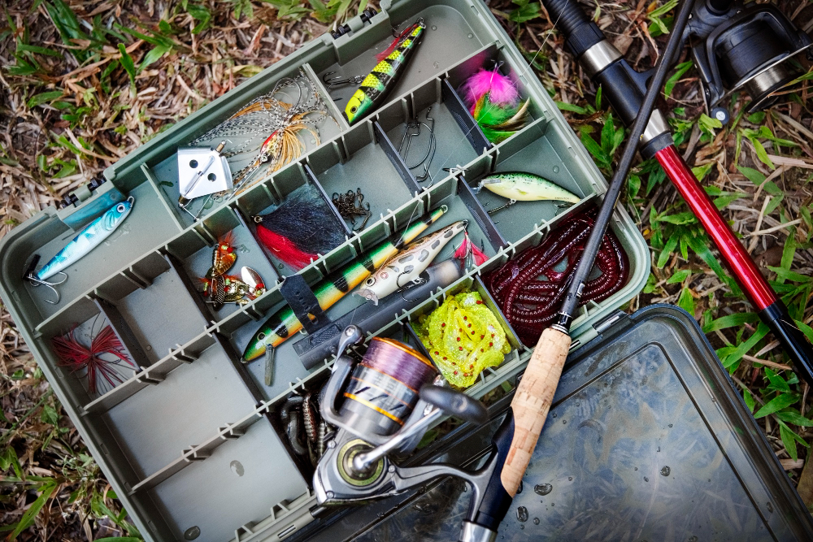
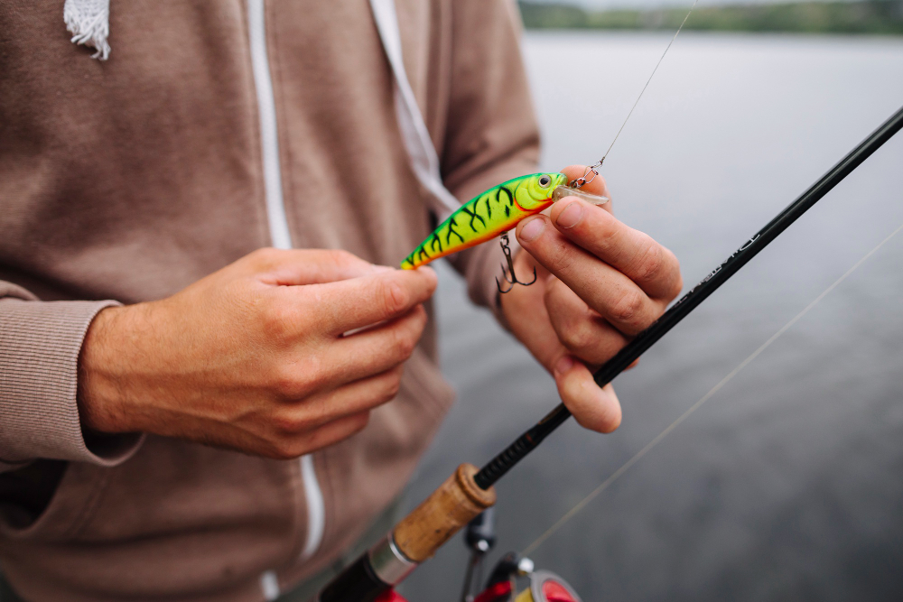
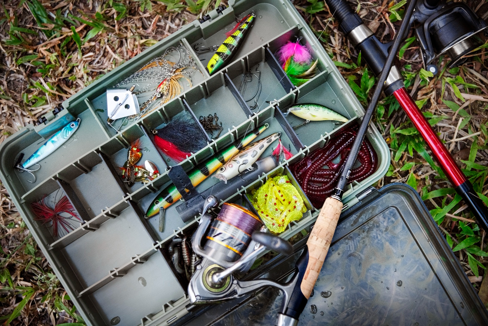
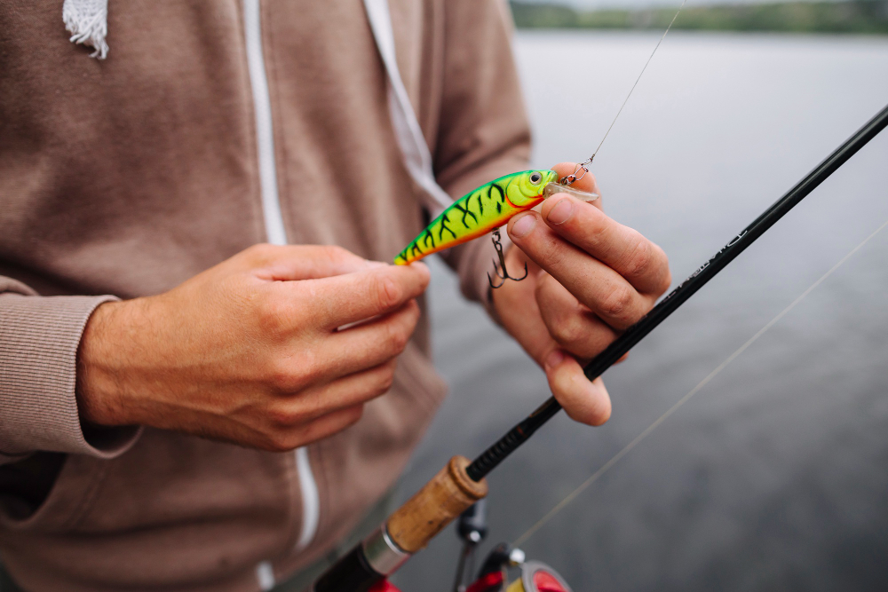

Que es FishingPR
FishingPR es una pagina para informar sobre las distintas especies marinas en Puerto Rico en la cual podemos ver distintos tipos de crustáceos, tortugas, tiburones, hasta especies invasoras aquí en la Isla del Encanto..


FishingPR es una pagina para informar sobre las distintas especies marinas en Puerto Rico en la cual podemos ver distintos tipos de crustáceos, tortugas, tiburones, hasta especies invasoras aquí en la Isla del Encanto..

 


